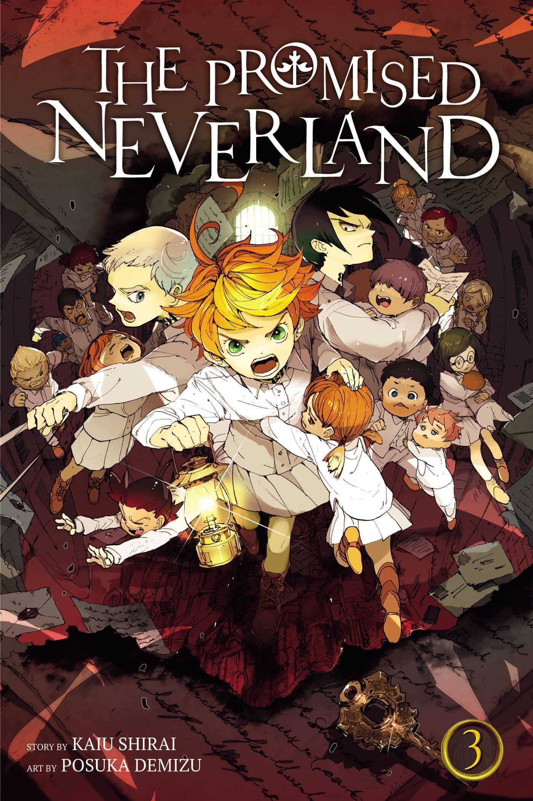
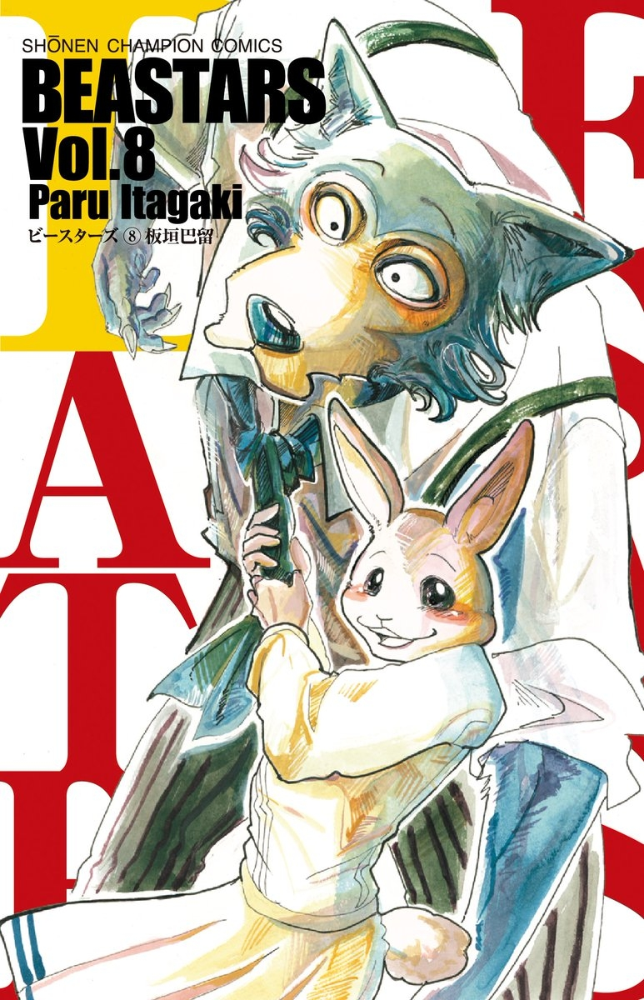

The Promised Neverland
¡EL THRILLER QUE ESTÁ ARRASANDO EN SHÔNEN JUMP! Emma, Norman y Ray son tres huérfanos que viven felices en el idílico orfanato Grace Field House, esperando el momento en el que se les asignará una familia adoptiva. Todo cambia cuando descubren accidentalmente la horrorosa realidad de su existencia, así que deciden rebelarse y luchar hasta las últimas consecuencias en una oscura y aterradora aventura. Pero su tiempo se acaba... (Me encanta este manga por el hecho de ser bastante adictivo, despues de una pagina quieres leer mas. Es una historia bastante original y completa, que incluso le dieron un anime de los primeros volumenes del manga)
Beastars
En un mundo poblado por animales antropomorfos, herbívoros y carnívoros conviven entre sí. Para las adolescentes de la Escuela Cherryton, la vida escolar está llena de esperanza, romance, desconfianza e inquietud. El personaje principal es Legoshi el lobo, miembro del club de teatro. A pesar de su aspecto amenazador, tiene un corazón muy suave. "Este es un manga con el que me identifico bastante por como describe perfectamente mi vida en la escuela, siento que este manga describe muy bien los problemas de los jovenes en una de las etapas mas dificiles de la vida, la adolecencia"